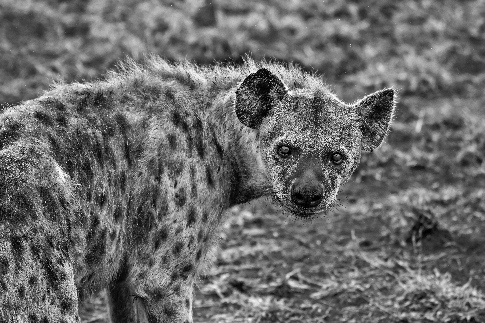

Giggling, sneaky, carrion-scavenging—and good for public health? Hyenas around the Ethiopian city of Mekelle often dine on livestock carcasses. In the process, a new study suggests, they may prevent infections of anthrax and bovine tuberculosis in nearby humans and animals.

Hungry Hyenas Can Help Human Health

New Scientist: Hyenas seen sharing their dens with porcupines and warthogs
Camera traps at two dens in Kenya have captured evidence of porcupines and warthogs occupying dens at the same time as their predators, spotted hyenas

Spotted hyenas adapt to climate change in famed Tanzanian park
Spotted hyenas appear to be adapting to climate change in Tanzania’s famous Serengeti National Park, surprising researchers who expected changing rainfall patterns would force the carnivores to spend more time searching for prey than tending to their cubs.

Spotted Hyena Facts!
Find out the fascinating truth about this supposed scavenger with our spotted
• Fall 2023 Class • Pre-Course • Beckie Morton •